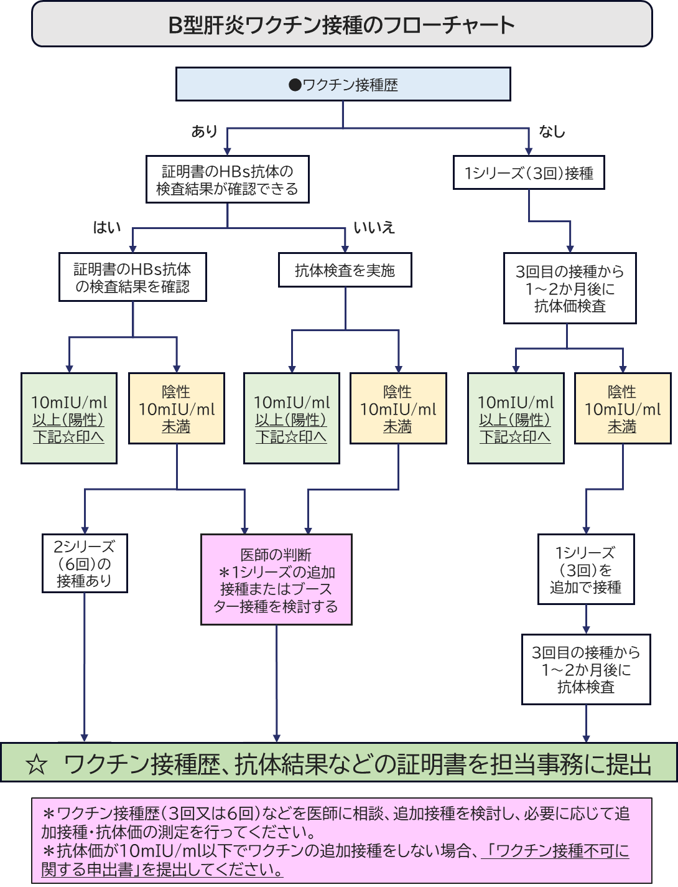
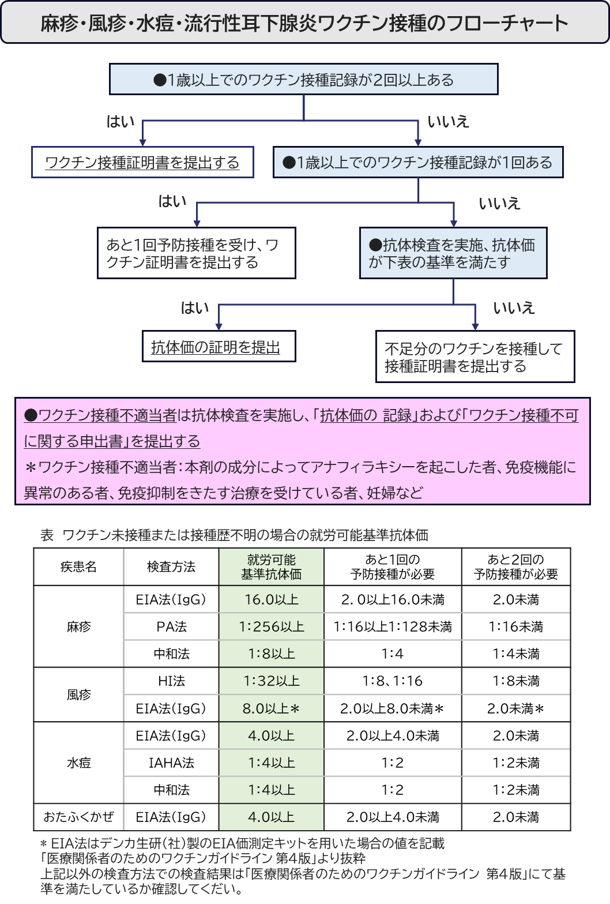
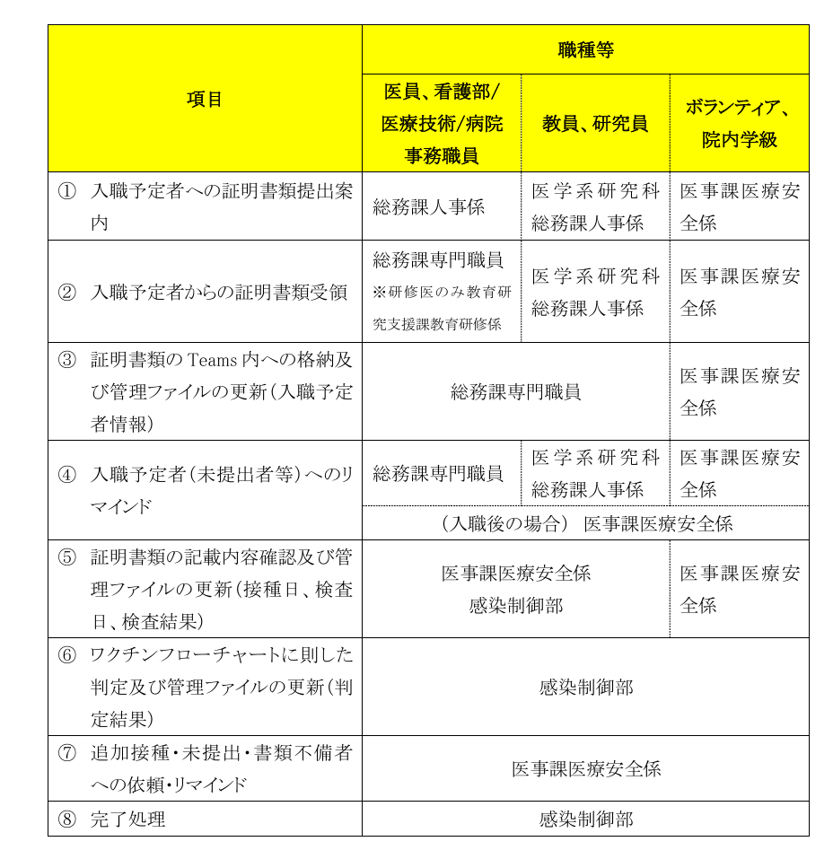
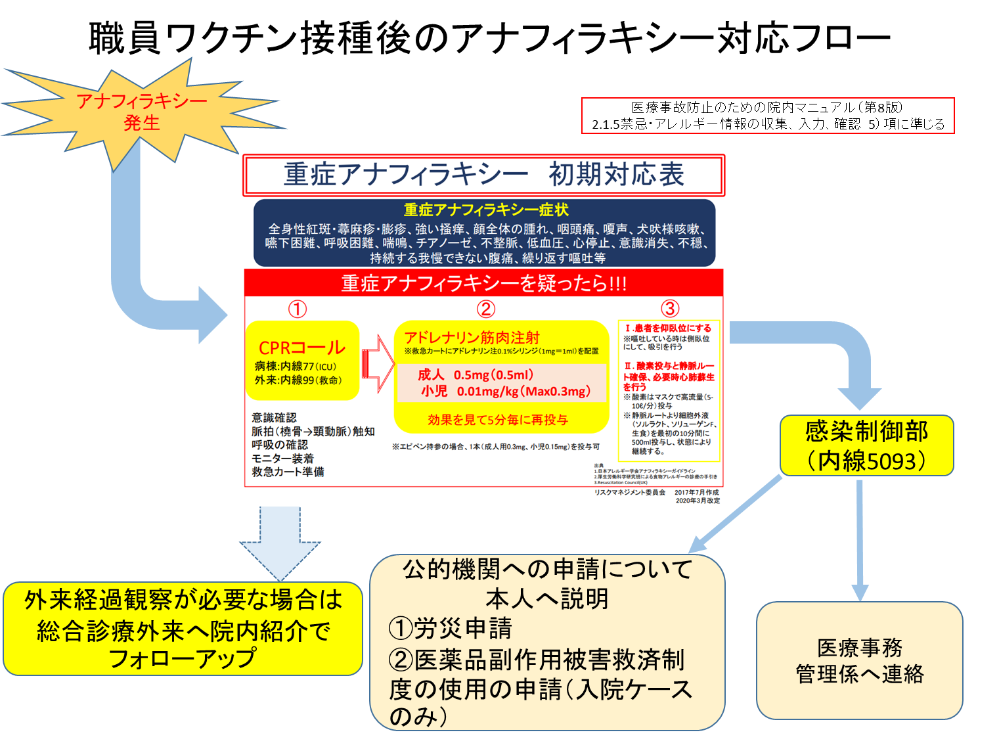

Ⅸ. ワクチン
- B型肝炎ワクチン/麻疹・風疹・水痘・ムンプスワクチンプログラム
大阪大学医学部附属病院では職業感染防止のために、令和7年度入職の職員より入職前に免疫保有を行うことを推奨している。尚、令和6年度まで入職職員に対しては、病院で抗体価を測定し、免疫保有できていない職員に対してはワクチン接種を行ってきた。
尚、インフルエンザ（全職員）については、希望者のみ流行期前に病院費用での接種を推奨している。（希望者のみ流行期前に病院費用で接種）
- 対象者
職 種 | |
医師 | 教員、研究員 |
医員（医師/専攻医） | |
医員（研修医） | |
看護部職員 | 看護師、助産師、技能職員等（看護助手、病棟保育士等） |
医療技術職員 | 薬剤師、臨床検査技師、診療放射線技師、臨床工学技士、理学療法士、栄養士、技術職員等 |
病院事務職員 | 主に病院内で従事する職員：医事課、医師事務作業補助者等 |
ボランティア、院内学級職員 | |
外部委託職員（委託担当事務にて、各委託業者の管理を行う） | |

ワクチン接種のフローチャート

- 免疫保有状況の確認
入職前にワクチン接種または抗体価測定の証明記録を送付頂き、総務課専門職員、医事課医療安全係、感染制御部でワクチン接種等の確認を行う。最大6か月以内にすべての免疫保有状況における書類提出が完了するような仕組みとしている。以下に各部門の業務事項を示す。

- インフルエンザワクチン接種について
対象者：インフルエンザワクチン接種申し込みを行った職員
接種時期：関連部署と協議の上決定し、通知（10月～11月）
接種方法：事前にインフルエンザワクチン接種申込みを行い、接種期間に案内された場所にて接種する。
- 新型コロナワクチン接種について
対象者：希望した職員
接種時期・方法：随時案内する。
- ワクチンについて
妊娠 | HIV感染者 | 重症免疫不全 | |
B型肝炎 | 〇 | 〇 | 〇 |
インフルエンザ | 〇 | 〇 | 〇 |
麻疹 | × | 〇 | × |
ムンプス | × | 〇 | × |
風疹 | × | 〇 | × |
水痘 | × | × | × |
ワクチン接種の可否
- 不活化ワクチン
- Ｂ型肝炎ワクチン（組み換え沈降Ｂ型肝炎ワクチン）
- 不活化ワクチン
Ｂ型肝炎予防
0.5ｍｌずつを４週間隔で２回、更に、20～24週を経過した後にさらに １回接種する（皮下注射または筋肉注射）
体液曝露後のＢ型肝炎発症予防 対象：2シリーズ未接種者
0.5ｍｌを１回、曝露発生後７日以内に接種し、更に１ヵ月後に２回目、 ３～６ヵ月後に３回目の接種を行う。
- 接種不適当者（禁忌）
明らかな発熱を呈している者
重篤な急性疾患にかかっていることが明らかな者
本剤の成分＊によってアナフィラキシーを呈したことがあることが明らかな者
上記に掲げる者のほか、予防接種を行うことが不適当な状態にある者
- 接種要注意者（慎重接種）
心臓血管系疾患、腎臓疾患、肝臓疾患、血液疾患及び発育障害等の基礎疾患を有することが明らかな者
前回の予防接種で２日以内に発熱のみられた者又は全身性発疹等のアレルギーを疑う症状を呈したことがある者
過去に痙攣の既往のある者
過去に免疫不全の診断がなされている者
妊婦または妊娠している可能性のある婦人（安全性は確立されていないが、予防接種上の有益性が危険性を上回ると判断される場合のみ接種する）
- 副反応
重大な副反応
- 多発性硬化症
- 急性散在性脳脊髄炎
その他の副反応
- 過敏症（発熱、発疹）
- 局所症状（疼痛、そう痒感、腫脹、硬結、発赤、熱感）
- 消化器症状（嘔気、下痢、食欲不振）
- 頭痛
- その他（倦怠感、違和感、関節痛、筋肉痛）
- インフルエンザHAワクチン
0.5ｍｌを皮下注射する。
- 接種不適当者（禁忌）
明らかな発熱を呈している者
重篤な急性疾患にかかっていることが明らかな者
本剤の成分＊によってアナフィラキシーを呈したことがあることが明らかな者
上記に掲げる者のほか、予防接種を行うことが不適当な状態にある者
- 接種要注意者（慎重接種）
心臓血管系疾患、腎臓疾患、肝臓疾患、血液疾患及び発育障害等の基礎疾患を有することが明らかな者
前回の予防接種で２日以内に発熱のみられた者又は全身性発疹等のアレルギーを疑う症状を呈したことがある者
過去に痙攣の既往のある者
過去に免疫不全の診断がなされている者
本剤の成分あるいは鶏卵、鶏肉、その他の鶏アレルギー
妊婦または妊娠している可能性のある婦人（安全性は確立されていないが、予防接種上の有益性が危険性を上回ると判断される場合のみ接種する）
- 副反応
重大な副反応
- ショック、アナフィラキシー様症状
- 急性散在性脳脊髄炎（ADEM）
- ギラン・バレー症候群
- 痙攣
その他の副反応
- 過敏症（発疹、蕁麻疹、紅斑、そう痒）
- 全身症状（発熱、悪寒、頭痛、倦怠感、嘔吐）
- 局所症状（疼痛、腫脹、発赤）
- 消化器症状（嘔気、下痢、食欲不振）
- 頭痛
- その他（倦怠感、違和感、関節痛、筋肉痛）
- 生ワクチン
- 麻疹ワクチン
- 水痘ワクチン
- 風疹ワクチン
- 流行性耳下腺炎
妊娠可能な婦人においてはあらかじめ約１ヶ月間避妊した後接種すること、およびワクチン接種後２ヶ月間は妊娠しないように厳重に注意すること。
- 接種不適当者（禁忌）
- 明らかな発熱を呈している者
- 重篤な急性疾患にかかっていることが明らかな者
- 本剤の成分＊によってアナフィラキシーを呈したことがあることが明らかな者
- 明らかに免疫機能に異常のある疾患を有する者及び免疫抑制をきたす治療を受けている者
- 妊娠していることが明らかな者
- 上記に掲げる者のほか、予防接種を行うことが不適当な状態にある者
- 接種不適当者（禁忌）
＊タマゴ、硫酸カナマイシン、ラクトビオン酸エリスロマイシンなど添付文書にて成分を確認
- 接種要注意者（慎重接種）
- 心臓血管系疾患、腎臓疾患、肝臓疾患、血液疾患及び発育障害等の基礎疾患を有することが明らかな者
- 前回の予防接種で２日以内に発熱のみられた者又は全身性発疹等のアレルギーを疑う症状を呈したことがある者
- 過去に痙攣の既往のある者
- 本剤過去に免疫不全の診断がなされている者
- 本剤の成分に対して、アレルギーを呈する恐れのある者
- 併用禁忌
- 副腎皮質ステロイド剤、免疫抑制薬（シクロスポリン、タクロリムスなど）
- 併用注意
- 輸血及びガンマグロブリン製剤（３ヶ月以上過ぎるまで、大量療法では６ヶ月以上過ぎるまで接種を延長する）
- 接種後１ヶ月以内はツベルクリン反応が弱くなることがある。
- 他の生ワクチンの緩衝作用により本剤のウイルスが増殖せず免疫を獲得できない恐れがあるので、他の生ワクチンの接種を受けた者は、通常、４週間以上経過した後に本剤を接種する。
- 副反応
- 重大な副反応
- 接種要注意者（慎重接種）
- アナフィラキシー様症状
- 急性血小板減少性紫斑病（1/100万人）
- けいれん
- 流行性耳下腺炎ワクチン：無菌性髄膜炎、精巣炎、難聴
- その他の副反応
- 過敏症
- 流行性耳下腺炎ワクチン：耳下腺腫脹
- アナフィラキシー様症状出現時の対応は次頁のフローに従って対応する
